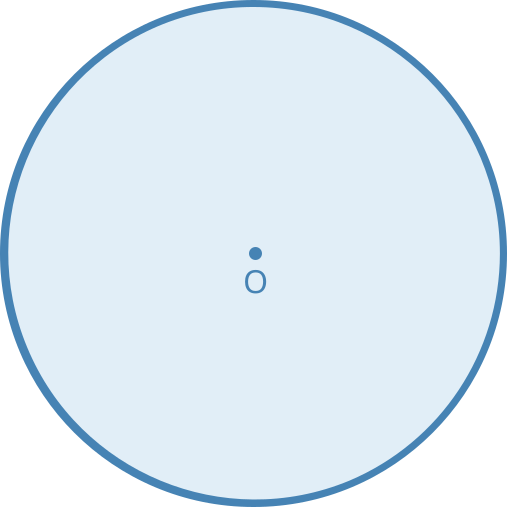
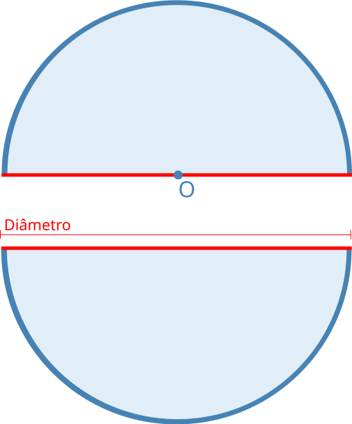

<section class="definition">
  <!-- Circunferência -->
  <div class="row definition__group mt-4">
    <div class="col-12">
      <h3>Círculo</h3>
      <p class="p-justify">
        Definição de círculo: "Círculo é a união de uma circunferência com todos os pontos internos a ela.”
      </p>
    </div>
    <div class="col-12 col-lg-6 col-xl-6">
      
    </div>
    <div class="col-12">
      <p class="p-justify">
        Para o círculo valem todas as propriedades de raio, diâmetro e cordas de uma circunferência. <br>
        Além dessas propriedades, os círculos são divididos em dois conjuntos de pontos iguais, chamados de <strong><i>semicírculos</i></strong>, por um diâmetro qualquer.
      </p>
    </div>
    <div class="col-12 col-lg-6 col-xl-6">
      
    </div>
  </div>

</section>